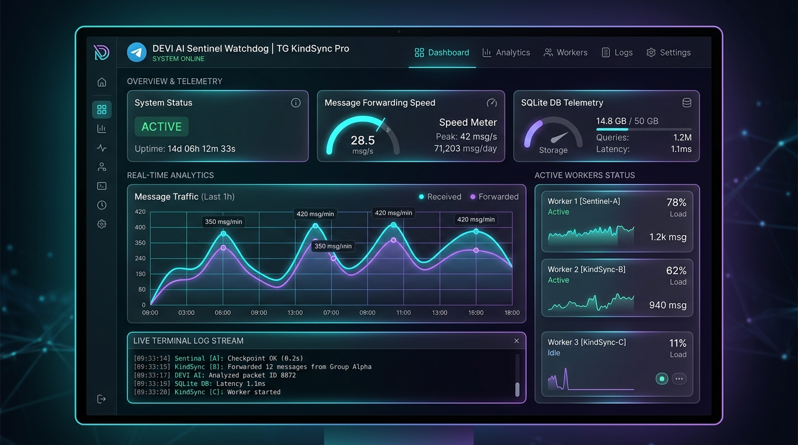
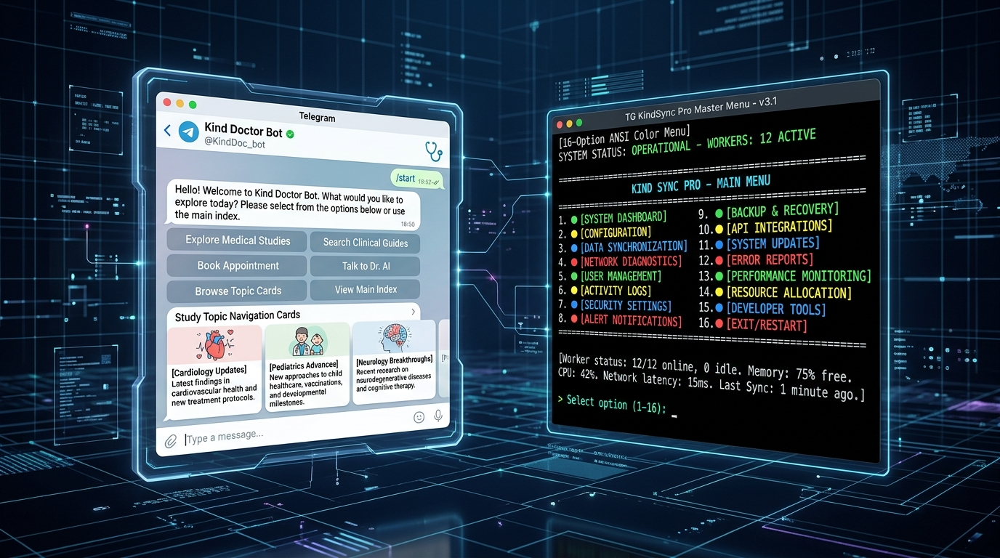

Zero Third-Party Client Mod Dependencies
TG KindSync Pro is built from the ground up on Python Telethon MTProto Client. It does NOT require or bundle external client modifications (such as AyuGram, Eugram, or modified TG Desktop forks) or HTTP Bot API wrappers.
❌ HTTP Bot API Wrappers
- ⚠️ 50MB file size ceiling (fails on large videos)
- ⚠️ Cannot forward from restricted/copy-protected chats
- ⚠️ Heavy JSON/HTTP polling overhead
- ⚠️ Rate limits trigger immediate hard 429 exceptions
⚠️ Third-Party Desktop Forks
- ⚠️ Requires desktop GUI running continuously
- ⚠️ Prone to local database lock contention
- ⚠️ Cannot run headlessly on Oracle Cloud VPS
- ⚠️ Lacks programmatic routing & API telemetry
✅ TG KindSync Pro MTProto
- ✨ 2GB to 4GB pure in-memory streaming
- ✨ Bypasses forward & copy restrictions seamlessly
- ✨ 24/7 headless operation on Windows, Linux & Termux
- ✨ Automated DLQ recovery & topic hierarchy locks
Obsidian Cyber-Glass UI & Kind Doctor Bot
A dual command surface providing complete operational oversight from desktop, cloud VPS, or your smartphone.

🖥️ Web Command Center HUD (:8080)
High-contrast Obsidian Bento dashboard featuring real-time speedometer dials, MTProto chunk bandwidth gauges, SQLite WAL latency monitors, active worker cards, and in-browser Telegram account login with SMS OTP & 2FA support.
🤖 Kind Doctor Operator Bot (@KindDoc_bot)
Autonomous Telegram bot daemon serving medical students and administrators alike. Provides interactive study category cards (/mainindex), Sangmata OSINT user radar (/userinfo), live speed checks, and remote emergency lockdown controls.

Step-by-Step Multi-OS Setup Guides
Verified, copy-paste terminal instructions with concrete command line examples for all major environments.
Windows 11 Workstation Setup
Prerequisites: Python 3.10-3.12 (check Add python.exe to PATH during setup) and Git for Windows.
# 1. Clone repository & enter workspace git clone https://github.com/Ammitrajput01/TG_KindSync_Pro.git cd TG_KindSync_Pro # 2. Create isolated virtual environment & activate python -m venv .venv .\.venv\Scripts\activate # 3. Upgrade pip and install production requirements python -m pip install --upgrade pip pip install -r requirements.txt # 4. Launch & Log In (No manual .env editing needed!) python tg_kindsync_pro.py # -> Choose [1] Scan QR Code, [2] Mobile OTP, or [3] Web Login (http://127.0.0.1:5005)
1-Click Launchers Suite (Double-Click in Explorer):
• 1_START_PRO.bat — Master Forwarding Engine (Prompts QR/OTP Login + 19 Quadrants TUI)
• 2_START_KIND_DOCTOR_BOT.bat — Standalone Kind Doctor Operator Bot Daemon
• 3_START_WEB_DASHBOARD.bat — Web Cockpit on http://localhost:8080 (Features In-Browser Account Login)
• 1_START_MY_ORACLE_DIRECT.bat — Direct Oracle Cloud VPS SSH Terminal
Kali Linux & Ubuntu 24.04 LTS (Oracle VPS)
Engineered for headless 24/7 cloud operation with zero memory leaks and automatic crash recovery.
# 1. Install multimedia and system packages sudo apt update && sudo apt install -y python3 python3-pip python3-venv git ffmpeg libgl1 fonts-dejavu-core tmux curl # 2. Clone repo and create virtual environment git clone https://github.com/Ammitrajput01/TG_KindSync_Pro.git cd TG_KindSync_Pro python3 -m venv .venv && source .venv/bin/activate pip install --upgrade pip && pip install -r requirements.txt # 3. Setup credentials cp .env.example .env && nano .env # 4. Run interactive persistent session via tmux tmux new -s kindsync source .venv/bin/activate python3 tg_kindsync_pro.py # Detach: Press Ctrl+B, then D | Re-attach: tmux attach -t kindsync
Android Smartphone & Tablet (Termux 24/7 Autopilot)
Run the entire forwarding core and bot 24/7 on an Android device without needing a computer!
# 1. Acquire Android Wake Lock (prevents CPU sleep when screen is off) termux-wake-lock # 2. Install build dependencies and clone pkg update -y && pkg install -y python git ffmpeg clang openssl git clone https://github.com/Ammitrajput01/TG_KindSync_Pro.git cd TG_KindSync_Pro pip install -r requirements.txt # 3. Configure credentials cp .env.example .env && nano .env # 4. Start 24/7 background autopilot daemon bash deploy/RUN_24_7_TERMUX.sh # 5. Monitor live streaming logs tail -f logs/forwarder_service.log
macOS (Apple Silicon & Intel)
brew install python@3.11 ffmpeg git git clone https://github.com/Ammitrajput01/TG_KindSync_Pro.git cd TG_KindSync_Pro python3 -m venv .venv && source .venv/bin/activate pip install -r requirements.txt cp .env.example .env python3 tg_kindsync_pro.py
Comprehensive 19-Option CLI Menu Matrix
Four distinct operational quadrants engineered for specialized transmission and maintenance workloads.
🟢 Safe Transmission
4 parallel workers with anti-flood rate pacing. Ideal for sensitive accounts, fresh sessions, or mobile hotspots.
⚖️ Production Default
12 parallel workers with dynamic backpressure. Recommended default mode for 24/7 channel mirroring.
🔥 Turbo Gigabit Chunker
40 parallel workers for high-speed VPS connections, massive 2GB-4GB video archives, and gigabit fiber.
🔴 24/7 Instant Listener
Real-time channel event daemon that intercepts and forwards incoming source messages the second they are published.
🔗 Quick Link Wizard
Interactive setup tool that parses Telegram invite links, resolves numeric IDs, and writes them into .env.
🔀 Route Matrix Manager
Visual routing table mapping content from multiple source channels into dedicated target forum topics simultaneously.
🎯 Cloner & Cherry-Picker
Select specific message ranges, forward single lectures, mirror discussion members, or recursively clone forums.
📑 Topic & Group Indexer
Generates rich, clickable Telegram master Table of Contents (TOC) posts with direct deep-links to files.
📁 Folder Batch Uploader
Scans local directories, extracts durations, splits oversized files, and uploads with strict numerical sequencing.
✍️ Watermark Sanitizer
Regex engine that scrubs promotional spam bots (e.g. @Dams_new_robot), appending custom branding.
🖼️ 16:9 Thumbnail Enforcer
Generates and injects uniform 16:9 HD video thumbnails with native cross-platform font fallbacks.
📮 Dead Letter Auto-Retry
Inspects failed transmissions, exports JSON diagnostics, and executes 1-click batch retries with exponential backoff.
🩺 System Diagnostics
Real-time MTProto ping to Telegram Data Centers, SQLite WAL integrity check, and RAM profiling.
♻️ Clean-Slate Rebuild
Backs up existing SQLite transactions and resets state, enabling channels to be re-synced from Message #1.
🧹 Lock & Cache Cleaner
Flushes stale file locks (engine.lock), ephemeral auth sessions, and temporary thumbnail caches.
❌ Zero-Loss Graceful Exit
Flushes SQLite WAL memory buffers to disk and closes active MTProto sockets cleanly without data loss.
Verified Official Contacts & Support Channels
To prevent impersonation, only contact the verified IDs listed below. No other Telegram accounts or emails belong to the lead developer.